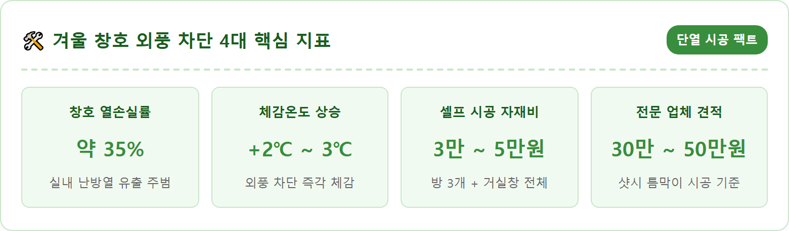
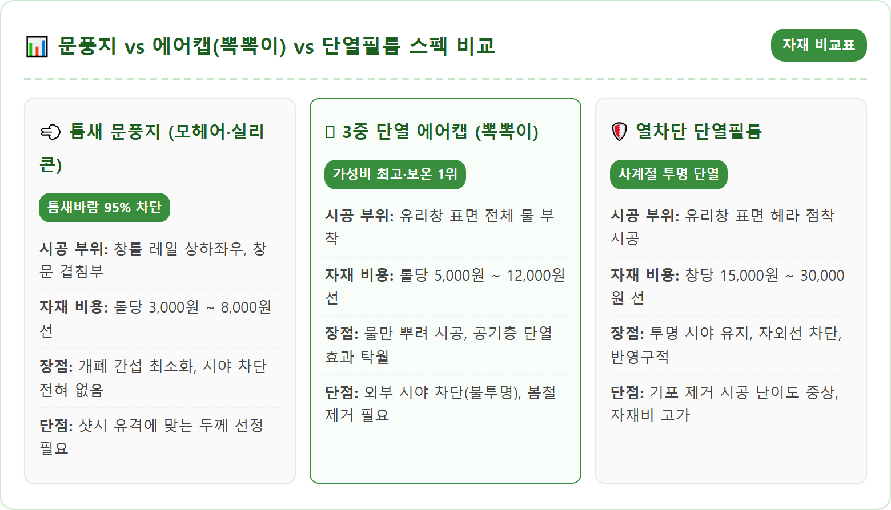
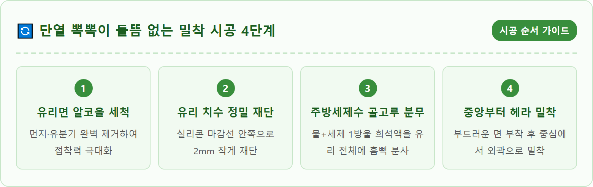
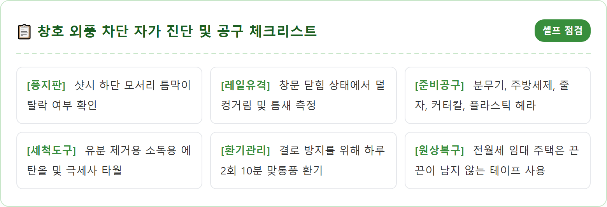
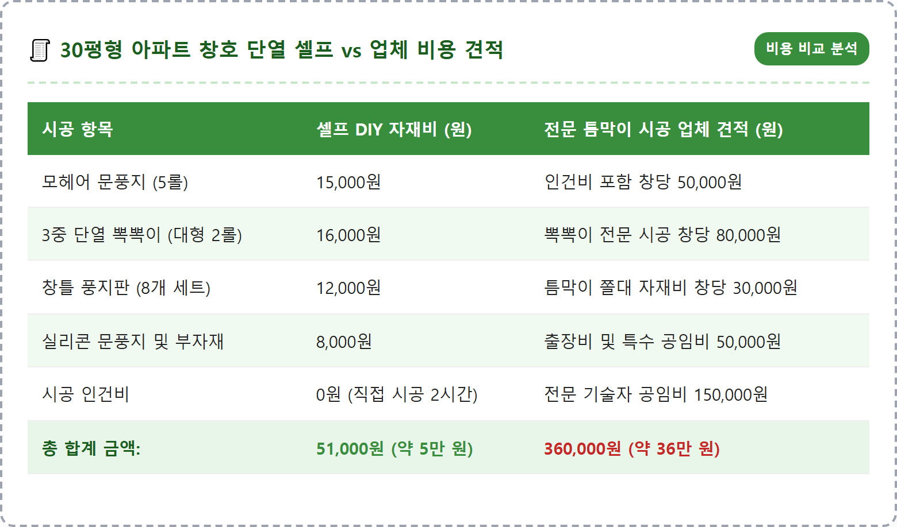
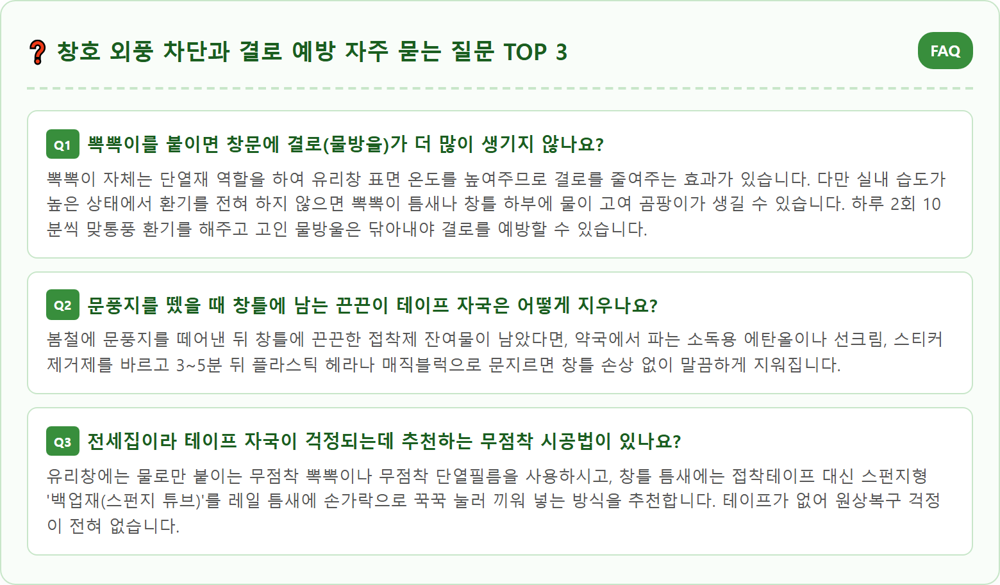

A clean, highly realistic photograph of DIY home winter window draft insulation and weatherstripping in a modern Korean apartment living room. On the clean wooden floor next to a large double-glazed sliding window, neatly arranged winter draft-proofing materials are displayed: rolls of transparent bubble wrap, high-density gray pile weatherstripping tape, clear silicone draft stoppers, a water spray bottle, and a utility knife. One window panel has neatly applied bubble wrap reflecting gentle winter morning sunlight, while another shows a person's hands wearing work gloves pressing a gray weatherstrip into the window frame groove. Practical home repair atmosphere, crisp focus, shot on full frame camera, 8k resolution, 1:1 aspect ratio.





